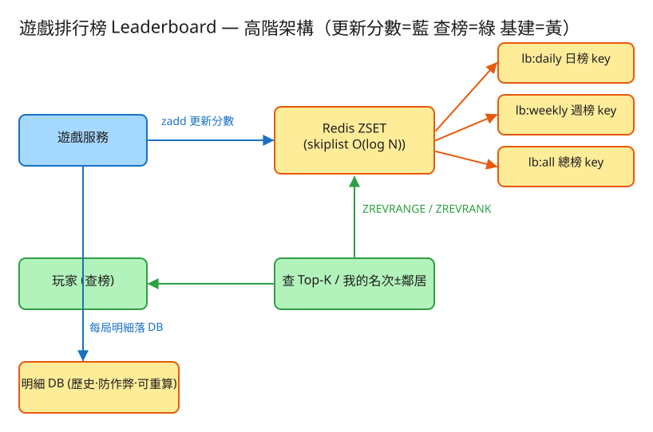

㉙ 遊戲排行榜 · 初學者友善版
D 串流計算/儲存分發
看故事就懂
輕鬆讀 25 分鐘
🧠 這份怎麼讀？
這份用「大腦比較好吸收」的方式重寫：先講生活比喻 → 把系統拆成小關卡 → 邊讀邊考自己。
分成兩部分：Part 1 概念（這系統在幹嘛）、Part 2 工程細節（怎麼真的蓋出來，一樣白話）。
遇到 💭 停一下 就先自己想 3 秒再往下看——這叫「提取練習」，比一直往下滑記得更牢。
1. 60 秒搞懂它在幹嘛
你玩過手遊或線上對戰嗎？打完一局，畫面會跳出「你目前排第 1,234 名」，旁邊還有「前一名 88,000 分，再加 200 分就能超過他！」。
這個讓幾百萬玩家隨時知道「我第幾名」的東西，就是排行榜（Leaderboard）。
它的難，不難在「存分數」（存分數誰都會），而難在這句：每次有人加分，全部人的名次都可能變，而且還要在幾十毫秒內算出某個人「第幾名」。百萬人同時打、同時看榜，這就不簡單了。
🏟️ 一句話比喻：體育場自動排座次
想像一個體育場，座位是按成績排的：成績最高的人坐第一排。只要有人成績一變，
整場的人就自動往前或往後挪，永遠保持「第一排最強、最後一排最弱」。
排行榜就是這個「永遠自動排好的體育場」。
2. 為什麼不能用「每次重數一遍」？
第一個直覺通常是：「分數存在資料庫（像 Excel 表），要查名次時，數一數有幾個人分數比我高，不就好了？」
📋 比喻：每次都重數全班排名
想像班上有 100 萬個學生。每當有一個人考完試改了分數，老師就要把全部 100 萬人的考卷重新數一遍，
才知道某個人排第幾——數完天都黑了。更慘的是，每個人查名次老師都要重數一次。
用資料庫的講法，這叫 SELECT COUNT(*) WHERE 分數 > 我的分數：每查一次名次，就要掃過全部人數一遍。
100 萬人、百萬人同時查，資料庫直接累垮。這個「數一遍」的成本，工程上寫成 O(N)（N 是人數，人越多越慢）。
那怎麼辦？答案就是那個「永遠自動排好的體育場」——一種叫 Redis ZSET（有序集合）的神奇工具。
它的厲害之處是：隊伍永遠按分數排好，不用每次重數。加分、查名次都快到像「O(log N)」——百萬人也只是「翻幾頁書」的功夫。
💭 停一下：為什麼「人越多」時，「每次重數一遍」會比「永遠排好的隊伍」慘得多？
看答案
因為「每次重數」是 O(N)：人多一倍，每次查就慢一倍，而且每個人查都要重數——百萬人 × 重數百萬 = 災難。
而「永遠排好的隊伍」是 O(log N)：人從 100 萬變成 1000 萬（10 倍），查詢只慢一點點（log 成長極慢）。差距會隨人數爆炸性拉開。
3. 把系統拆成 3 個關卡
別被「系統」嚇到。整件事其實就是闖 3 關。先記住那支「永遠按分數排好的隊伍」（ZSET），3 關都圍著它轉：
1加分：一局結束，更新我的分數
玩家打完一局，回報分數。系統把他放進那支排好的隊伍，或移動到新位置。
🏟️ 比喻：座位自動往前挪
你考了更高分，體育場就自動把你的座位往前排移，後面的人遞補。
你不用自己去問「我現在第幾排」，因為挪完位置的當下，隊伍就已經是排好的。
👉 這裡有個面試一定會問的小問題：「分數是取最高、累加、還是最新？」例如打了 80 分後又打 60 分——要留 80（最高）、變 140（累加）、還是變 60（最新）？這會改變整題做法，先問清楚。
2查前 K 名：誰是前 10 / 前 100？
排行榜首頁要顯示「冠軍榜：前 100 名」。因為隊伍本來就排好了，這超簡單。
🏟️ 比喻：直接看前幾排
要找前 100 強？直接走到第一排，往後數 100 個就好——不用看全場。
隊伍既然永遠排好，「看前 K 名」幾乎不花力氣。
這在工具裡叫 ZREVRANGE（從分數高的那頭取前 K 個）。而且大家都愛看同樣的「前 100 名」，所以這份結果可以暫存一下（快取），不用每個人都重算。
3查「我第幾名 + 我的上下鄰居」
玩家其實最在意自己：「我第 1,234 名，前一名差我多少？我再贏幾分能超過他？」
🏟️ 比喻：問座位號 + 看左右鄰居
你走進體育場，工作人員馬上告訴你「你坐第 1,234 排」（因為隊伍排好，一查就知道）。
然後你看看前後幾排坐了誰——這就是「我的名次 ± 鄰居」。
做法兩步：先用 ZREVRANK 查出「我是第幾名（r）」，再取「第 r-5 到 r+5 名」這一小段，就拿到上下鄰居了。兩步都很快。
✅ 三關一句話
① 加分就重排（隊伍自動排好）→ ② 查前 K 名就走到最前面數幾個 → ③ 查自己就問座位號＋看左右鄰居。全都因為「隊伍永遠排好」而變得超快。
4. 設計時最怕的 3 件事
工程上的「取捨」聽起來很抽象。換個方式記：這個系統最怕三件事，每個設計都是為了避開某個「怕」。
😱 怕「慢」
玩家打完一局，希望立刻看到新名次；點開排行榜也要秒開。如果用「每次重數一遍」（O(N)），百萬人一起查就卡死。
所以才一定要用「永遠排好的隊伍」（ZSET，O(log N)）——更新和查名次都要快。
😱 怕「擠在同一個點」
一個榜就是一支隊伍，住在同一台機器上。熱門遊戲百萬人同時加分、同時看「前 100 名」，全擠到這一台——這台會先爆掉。
對策：前 100 名暫存一份共用（大家看的都一樣），再加幾台「唯讀分身」分擔看榜的人潮。
😱 怕「記憶體裡的資料弄丟」
這支隊伍住在記憶體裡（所以才快），但記憶體一斷電就空了。萬一機器掛掉，榜豈不是沒了？
對策：每一局的分數同時抄一份到硬碟的帳本（明細庫），就算隊伍消失，也能照帳本重新排一支。另外，這本帳本還能用來抓作弊。
5. 一張圖看懂

✏️ 用 Excalidraw 開啟編輯（diagram.excalidraw）
白話導讀：
- 🎮 遊戲服務：玩家打完一局，回報分數 →
- 🏟️ 把分數丟進 Redis ZSET（那支永遠排好的隊伍），當場重排。其實有三支隊伍：日榜、週榜、總榜 →
- 📒 同時把這一局抄一份到明細庫（帳本），用來救援重建、抓作弊 →
- 👀 玩家查榜：看前 K 名、查自己第幾名＋上下鄰居，全都從那支排好的隊伍直接撈出來。
6. 名詞白話翻譯
看完上面，這些詞你其實都已經懂了，這裡只是把「工程術語 ↔ 白話」對起來，Part 2 會用到：
| 工程術語 | 白話解釋 |
|---|
| Redis ZSET（有序集合） | 那支「永遠按分數排好的隊伍」：加分就重排，查名次飛快 |
| skiplist（跳表） | ZSET 內部的排隊魔法，讓「插隊到對的位置」和「查第幾名」都只要翻幾頁 |
| ZADD | 把某人放進隊伍 / 更新他的分數（自動重排） |
| ZREVRANGE | 從最高分那頭，取出前 K 名（看冠軍榜） |
| ZREVRANK | 查「我是第幾名」（從高分數起算） |
| O(N) / O(log N) | O(N)＝每次重數全部人（人多就慢）；O(log N)＝翻幾頁就好（人多也快） |
| 分窗榜（日/週/總） | 三支獨立隊伍：今日榜、本週榜、總榜，各排各的 |
| tie-break（同分排序） | 分數一樣時誰排前面的規則（常用「先達標的人優先」） |
| 快取（cache） | 把「大家都看的前 100 名」暫存一份，不用每次重算 |
| QPS | 每秒幾筆請求（衡量「多忙」的單位） |
| API | 系統之間講好的「點餐單」格式：你給我什麼、我回你什麼 |
| 近似名次 / 分桶 | 不算精確第幾名，改說「你贏過 87% 的人」，更省力 |
🛠️ Part 2 ｜ 工程細節（一樣白話）
概念懂了，來看「真的要動手蓋，得想清楚哪些事」。一樣用比喻，不用怕。
7. 要準備多大？（規模估算）
🍱 比喻：辦活動前先估人數
辦活動前，你會先估「大概來幾個人」，才決定訂幾個便當、租多大場地。
系統設計也一樣：先估數字，才知道要準備多大的「料」。這一步叫規模估算。
我們估幾個關鍵數字（數字不必背，重點是感受它的「形狀」）：
| 估什麼 | 大概數字 | 所以呢？ |
|---|
| 每天活躍玩家 | 1000 萬人 | 一支隊伍大約 1000 萬人，要排得動 |
| 加分有多頻繁（寫） | 每人每天打 10 局 → 1 億次/日 | 平均每秒約 1,200 次加分，尖峰再 ×5 |
| 看榜有多頻繁（讀） | 每人每天看 20 次 → 2 億次/日 | 看榜比加分還多，「前 100 名」是大熱點 |
| 一支隊伍佔多少記憶體 | 每人約 60～100 位元組 | 1000 萬人 ≈ 0.6～1 GB，一台機器塞得下 |
💡 關鍵洞察：難的不是「裝得下」，是「排得動」
1 GB 對機器來說小菜一碟，容量根本不是問題。真正的挑戰是兩件事：
(1) 每次加分都要當場維持全隊有序（這就是為什麼需要 ZSET）、
(2) 大家都擠著看「前 100 名」（熱點集中在一個地方）。
💭 停一下：既然一支隊伍只要 1 GB、機器塞得下，那為什麼還會有「擴展」的煩惱？
看答案
因為「塞得下」不等於「忙得過來」。1 GB 容量沒問題，但百萬人同時加分＋同時看前 100 名，全打到放這支隊伍的那一台機器上，它的 CPU 和網路會先被擠爆。瓶頸是「流量擠在同一點」，不是「裝不下」。8. 系統之間怎麼溝通？（API）
🍔 比喻：點餐單
API 就是兩個系統之間講好的「點餐單格式」：你要點什麼（給我哪些欄位）、我回你什麼。
講好格式，雙方就能合作，不用知道對方廚房怎麼運作。
這題只要記住三張「點餐單」，剛好對應前面的三關：
① 提交分數（加分這一關）
POST /api/scores
給我：{ 玩家:"alice", 分數:1500, 榜別:"daily" }
我回：{ 名次:42, 分數:1500, 總人數:982萬 } ← 順便告訴你現在第幾名
為什麼回傳的時候「順便附上名次」？因為玩家加完分最想知道的就是「那我現在第幾名了？」。一次回給他，省一趟來回。對應的工具指令就是 ZADD（放進隊伍）。
② 查前 K 名（看冠軍榜這一關）
GET /api/top?k=100&board=weekly
我回：{ 榜單:[ {名次:1, 玩家:"zoe", 分數:99999}, ... ] }
對應 ZREVRANGE（從高分那頭取前 K 個）。大家看的都是同一份，所以可以暫存共用。
③ 查我的名次 + 上下鄰居（查自己這一關）
GET /api/around/alice?n=5&board=daily
我回：{ 名次:1234, 視窗:[ 第1229名, ..., {第1234名,"alice",我}, ... 第1239名 ] }
對應「先 ZREVRANK 查我第幾名，再取上下各 5 名」。這就是 demo 裡 around() 做的事。
9. 系統要記住哪些事？（資料模型）
📒 比喻：三支隊伍 + 一本帳本
系統要記的東西分兩種：「排好的隊伍」（在記憶體裡，要快）和「流水帳本」（在硬碟裡，要久）。
🏟️三支排好的隊伍（日榜 / 週榜 / 總榜）
每支隊伍是一個 ZSET，裡面只記每位玩家的「目前分數」。重點是：分窗榜＝不同隊伍。
為什麼日榜、週榜要分開兩支隊伍？
因為它們各排各的、各自重置。日榜每天換一支新隊伍（舊的設定時間到自動清掉），週榜每週換，總榜常駐不換。
這樣「跨日重置」就超乾淨——直接開一支新隊伍，不用一個個把舊資料刪掉。
📒流水帳本（每一局都抄一筆）
每打完一局，就在硬碟帳本記一筆：玩家、分數、榜別、時間。這本帳本不參與排名（排名交給隊伍），它的用途是：
- 救援重建：隊伍（記憶體）萬一沒了，照帳本重排一支。
- 抓作弊：分數異常暴衝？查帳本就知道。
- 事後重算：規則改了，可以照帳本重新算榜。
為什麼帳本不放進隊伍？因為帳本是「只增不改的流水紀錄」（每局都新增一筆，量超大），而隊伍只關心「每人現在幾分」。兩者目的不同，分開放各司其職。
10. 哪裡會塞車、怎麼拓寬？（擴展）
🚗 比喻：找出塞車路段，拓寬它
系統變大時，總有某個環節會先「塞車」。工程師的工作就是找出最會塞的地方，把它拓寬。一個一個看：
| 哪裡會塞車 | 怎麼拓寬 |
|---|
| 百萬人都來看「前 100 名」，全打到放隊伍的那台機器 | 把前 100 名暫存一份共用（大家看一樣），再加幾台唯讀分身分攤看榜人潮 |
| 名次要「全隊有序」，沒辦法像一般資料切成好幾份分散 | 切開就算不出「跨片的全域第幾名」；只能單台垂直擴容，或改用下面的「近似名次」 |
| 百萬人要精確的「第幾名」，計算很貴 | 改算近似名次：用「分數分桶」統計各分數區間多少人，回「你贏過 87% 的人」，便宜又能分散 |
| 同一玩家短時間狂加分 → 一堆重複更新 | 先在本地合併（只留最高/最新）再批次寫，削掉寫入尖峰 |
| 放隊伍的機器掛了，榜不能丟 | 定期存檔到硬碟，再加上從帳本重算重建那支隊伍 |
11. 還有哪些「魚與熊掌」？（取捨）
「Part 1 的三個怕」是核心取捨。這裡補幾個常被面試官追問的：
⚖️ 精確名次 vs 近似名次
人不多時用 ZSET 算「精確第幾名」（快又準）。但到了千萬人，精確名次很貴——而玩家其實只在意「我在前幾 %」。
這時改回「你贏過 87% 的人」這種近似說法，省力又好分散。先問業務需不需要精確。
⚖️ 即時更新 vs 批次更新
電競要即時：打完一局馬上重排（每局都 ZADD）。休閒遊戲可批次：先把分數攢著，每隔幾分鐘一次重算——省機器力氣，但榜會慢一點。
⚖️ 同分時誰排前面（tie-break）
兩人同分，總得有個穩定規則，否則名次會跳來跳去。常見做法是「先達到這個分數的人排前面」（把達標時間也編進去比）。本 demo 用「先加入者在前」，語意就是這個。
💭 追問：玩家分數可能被作弊灌爆，怎麼防？
靠那本流水帳本：每局都留紀錄，事後用異常偵測抓「分數暴衝」的可疑帳號，必要時把作弊分數回滾、照帳本重算乾淨的榜。隊伍負責快，帳本負責真相。💭 追問：跨日重置時，玩家辛苦的成績不就沒了？
不會。日榜是每天換新隊伍（昨天的自動回收），但總榜常駐、累計不重置。所以「今天榜」清空，但「總成績」還在——分窗榜本來就是讓玩家同時有短期競爭和長期積累。12. 動手玩玩看
讀十遍不如玩一遍。這題有一個真的可以跑的小程式，讓你親眼看到「加分 → 重排 → 查名次」：
# 啟動（在這題的 demo 資料夾裡）
cd demo
php -S localhost:8029 -t public
# 然後瀏覽器打開 http://localhost:8029
- 提交幾個玩家的分數（等於把人放進那支隊伍）。
- 看 Top-K（前幾名），再查某個玩家的名次 + 上下鄰居。
- 切換 日榜 / 週榜 / 總榜，看它們是各排各的三支獨立隊伍。
玩的時候想一下給同一個玩家提交一個更高的分數，看他的名次是不是立刻往前跳（這就是「加分即重排」）。再讓兩個玩家同分，看誰排前面（這就是 tie-break）。
（誠實提醒：demo 用陣列排序模擬 ZSET，語意正確、可跑，但沒做到真 Redis 的 O(log N)；換成真 Redis 時各方法可一對一對應 ZADD / ZREVRANK / ZREVRANGE。）
13. 考考自己
先不要看答案，自己用講給朋友聽的方式回答看看（講得出來才是真的懂）：
Q1：用「體育場座位」的比喻，說說排行榜在幹嘛？
排行榜像一個座位按成績排的體育場：成績最高坐第一排。任何人成績一變，大家自動往前/往後挪，永遠保持有序。所以查「前幾名」「我第幾排」都很快。Q2：為什麼不能用「每次數一遍有幾個人比我高」來算名次？
那叫 O(N)：每查一次名次就要掃過全部人。百萬人、且每個人都查，資料庫直接累垮。要改用「永遠排好的隊伍」（ZSET），查名次只要 O(log N)，翻幾頁就好。Q3：排行榜的三個關卡分別是什麼？
① 加分（更新分數、隊伍當場重排）② 查前 K 名（走到最前面數幾個）③ 查自己第幾名 + 上下鄰居（先問座位號，再看左右）。Q4：日榜、週榜、總榜為什麼要分成三支獨立隊伍？
因為它們各排各的、各自重置。日榜每天換新隊伍（舊的自動回收），週榜每週換，總榜常駐。分開後「跨日重置」只要開一支新隊伍，超乾淨，總成績也不會被清掉。Q5（工程）：明明一支隊伍只要 1 GB、機器塞得下，為什麼還要煩惱「擴展」？
塞得下不等於忙得過來。瓶頸不是容量，是「流量擠在同一點」：百萬人同時加分＋看前 100 名，全打到放隊伍的那一台。對策是把前 100 名暫存共用、加唯讀分身分攤。Q6（工程）：為什麼分數要同時抄一份到「流水帳本」？它跟隊伍有何不同？
隊伍在記憶體裡（快但會丟、只記當前分數）；帳本在硬碟（每局都新增一筆、只增不改）。帳本用來救援重建（隊伍掛了照帳本重排）、抓作弊、事後重算。兩者目的不同，分開各司其職。Q7（工程）：到了千萬玩家，「精確第幾名」太貴，可以怎麼取捨？
改用「近似名次／分桶」：統計各分數區間多少人，回「你贏過 87% 的玩家」而非精確第幾名。玩家其實只在意前幾 %，這樣計算更便宜、也比較好分散到多台機器。14. 30 秒回顧
遊戲排行榜 = 一支「永遠按分數排好的隊伍」（Redis ZSET），像會自動排座次的體育場。
3 個關卡：① 加分就重排 → ② 查前 K 名（走到最前面數幾個）→ ③ 查自己第幾名 + 上下鄰居。全靠「隊伍永遠排好」變得超快（O(log N)，不是每次重數的 O(N)）。
3 個怕：怕慢（所以用 ZSET 不用 SQL 重數）、怕擠在同一點（前 100 名暫存共用 + 唯讀分身）、怕記憶體弄丟（抄一份到硬碟帳本，能重建還能抓作弊）。
工程細節一句話：難的不是裝得下（才 1 GB）而是排得動 → 三張點餐單(API)對應三關、加分順便回名次 → 三支隊伍（日/週/總）＋一本帳本 → 熱點就暫存共用、規模爆大就改「近似名次」。
想看更精簡、面試速查用的版本？👉 前往完整版（同樣內容的工程速查格式）。